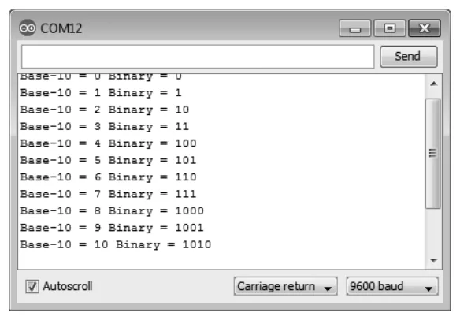

Most children learn to count using the base-10 system, but computers (and the Arduino) count using the binary number system. Binary numbers consist of only 1s and 0s—for example, 10101010. In binary, each digit from right to left represents 2 to the power of the column number in which it appears (which increases from right to left). The products in each column are then added to determine the value of the number.
For example, consider the binary number 11111111, as shown in Table 6-1. To convert the number 11111111 in binary to base 10, we add the totals in each column as listed in the bottom row of the table:
128 + 64 + 32 + 16 + 8 + 4 + 2 + 1
It is 255. A binary number with eight columns (or bits) holds 1 byte of data; 1 byte of data can have a numerical value between 0 and 255. The leftmost bit is referred to as the Most Significant Bit (MSB), and the rightmost is the Least Significant Bit (LSB).
Binary numbers are great for storing certain types of data, such as on/off patterns for LEDs, true/false settings, and the statuses of digital outputs. Binary numbers are the building blocks of all types of data in computers.
| 27 | 26 | 25 | 24 | 23 | 22 | 21 | 20 | |
|---|---|---|---|---|---|---|---|---|
| 1 | 1 | 1 | 1 | 1 | 1 | 1 | 1 | Binary |
| 128 | 64 | 32 | 16 | 8 | 4 | 2 | 1 | Base 10 |
Byte Variables
One way we can store binary numbers is by using a byte variable. For example, we can create the byte variable outputs using the following code:
byte outputs = B11111111;The B in front of the number tells Arduino to read the number as a binary number (in this case, 11111111) instead of its base-10 equivalent of
- Listing 6-2 demonstrates this further.
// Listing 6-2
byte a;
void setup()
{
Serial.begin(9600);
}
void loop()
{
for ( int count = 0 ; count < 256 ; count++ )
{
a = count;
Serial.print("Base-10 = ");
❶ Serial.print(a, DEC);
Serial.print(" Binary = ");
❷ Serial.println(a, BIN);
delay(1000);
}
}We display byte variables as base-10 numbers using DEC ❶ or as binary numbers using BIN ❷ as part of the Serial.print() function. After uploading the sketch, you should see output in the Serial Monitor similar to that shown in Figure 6-3.
